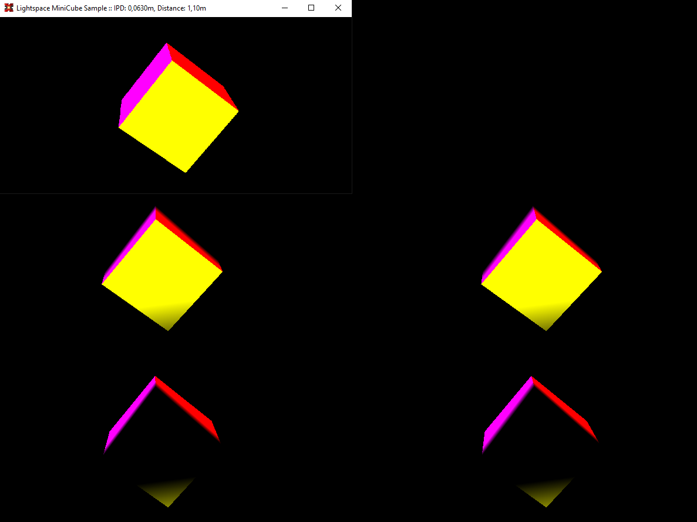

Sample Projects
Samples are located under samples folder.
MiniCube Sample
The sample is based on MiniCube sample found on GitHub

How To Use
- Launch application
MiniCube.exein default mode or client-host communication mode using host path as startup argument, e.g.MiniCube.exe path-to-host-exe/LightspaceCompositorHost.exe. - On small external renderer window:
- Use up and down arrow keys to change cube distance.
- Use left and right arrow keys to change user IPD.
Code sample
Here is a code sample used with MiniCube application using SharpDX as external renderer core.
// -----------------------------------------------------------------------
// <copyright file="Program.cs" company="Lightspace Technologies">
// Copyright (c) Lightspace Technologies. All rights reserved.
// </copyright>
// -----------------------------------------------------------------------
namespace MiniCube
{
using System;
using System.Diagnostics;
using System.Drawing;
using System.IO;
using System.Linq;
using System.Reflection;
using System.Windows.Forms;
using LightspaceCompositor;
using LightspaceCompositorContracts;
using LightspaceCompositorServiceClient;
using SharpDX;
using SharpDX.D3DCompiler;
using SharpDX.Direct3D;
using SharpDX.Direct3D11;
using SharpDX.DXGI;
using SharpDX.Windows;
using Color = SharpDX.Color;
using Device = SharpDX.Direct3D11.Device;
using Matrix = SharpDX.Matrix;
using Vector3 = SharpDX.Vector3;
/// <summary>
/// A compositor integration sample based on MiniCube project found here
/// https://github.com/sharpdx/SharpDX-Samples/tree/master/Desktop/Direct3D11/MiniCube
/// </summary>
public class Program
{
/// <summary>
/// The main entry point of the program. Initializes render form and compositor
/// </summary>
/// <param name="cmd">The cmd line args.</param>
public static void Main(string[] cmd)
{
var form = new RenderForm("Lightspace MiniCube Sample");
var hostPath = cmd.ToList().FirstOrDefault();
var useHost = !string.IsNullOrEmpty(hostPath);
var compositor = InitializeCompositor(useHost, hostPath);
var distance = 1f;
var depthDsvDescription = new DepthStencilViewDescription()
{
Format = Format.D32_Float_S8X24_UInt,
Texture2D = new DepthStencilViewDescription.Texture2DResource()
{
MipSlice = 0
},
Dimension = DepthStencilViewDimension.Texture2D,
Flags = DepthStencilViewFlags.None
};
// SwapChain description
var desc = new SwapChainDescription()
{
BufferCount = 1,
ModeDescription = new ModeDescription(
form.ClientSize.Width,
form.ClientSize.Height,
new Rational(60, 1), Format.R8G8B8A8_UNorm),
IsWindowed = true,
OutputHandle = form.Handle,
SampleDescription = new SampleDescription(1, 0),
SwapEffect = SwapEffect.Discard,
Usage = Usage.RenderTargetOutput
};
Device device;
SwapChain swapChain;
// Create Device and SwapChain
using (var factory2 = new Factory2())
{
var adapterInfo = compositor.GetGraphicsAdapterInfo();
using (var adapter = factory2.Adapters.First(x => x.Description.Luid == adapterInfo.AdapterLuid))
using (var output = adapter.Outputs.First(x => x.Description.DeviceName == adapterInfo.OutputDeviceName))
{
Device.CreateWithSwapChain(adapter, DeviceCreationFlags.None, desc, out device, out swapChain);
}
}
var immediateContext = device.ImmediateContext;
var deferredContexts = new[]
{
new DeviceContext(device),
new DeviceContext(device)
};
var commandLists = new CommandList[2];
// Ignore all windows events
var factory = swapChain.GetParent<Factory>();
factory.MakeWindowAssociation(form.Handle, WindowAssociationFlags.IgnoreAll);
// Compile Vertex and Pixel shaders
var assembly = Assembly.GetExecutingAssembly();
var names = assembly.GetManifestResourceNames();
var resourceName = names.First(x => x.Contains("MiniCube.MiniCube.fx"));
// Read embedded shader resource and compile shaders
string result = string.Empty;
using (var stream = assembly.GetManifestResourceStream(resourceName))
using (var reader = new StreamReader(stream))
{
result = reader.ReadToEnd();
}
var vertexShaderByteCode = ShaderBytecode.Compile(result, "VS", "vs_4_0");
var vertexShader = new VertexShader(device, vertexShaderByteCode);
var pixelShaderByteCode = ShaderBytecode.Compile(result, "PS", "ps_4_0");
var pixelShader = new PixelShader(device, pixelShaderByteCode);
var signature = ShaderSignature.GetInputSignature(vertexShaderByteCode);
// Layout from vertex shader input signature
var layout = new InputLayout(device, signature, new[]
{
new InputElement("POSITION", 0, Format.R32G32B32A32_Float, 0, 0),
new InputElement("COLOR", 0, Format.R32G32B32A32_Float, 16, 0),
});
// Instantiate vertex buffer from vertex data - represents 0.2 x 0.2 cube with colored surfaces
var vertices = SharpDX.Direct3D11.Buffer.Create(device, BindFlags.VertexBuffer, new[]
{
new Vector4(-0.1f, -0.1f, -0.1f, 1f), new Vector4(1.0f, 0.0f, 0.0f, 1.0f), // Front
new Vector4(-0.1f, 0.1f, -0.1f, 1f), new Vector4(1.0f, 0.0f, 0.0f, 1.0f),
new Vector4( 0.1f, 0.1f, -0.1f, 1f), new Vector4(1.0f, 0.0f, 0.0f, 1.0f),
new Vector4(-0.1f, -0.1f, -0.1f, 1f), new Vector4(1.0f, 0.0f, 0.0f, 1.0f),
new Vector4( 0.1f, 0.1f, -0.1f, 1f), new Vector4(1.0f, 0.0f, 0.0f, 1.0f),
new Vector4( 0.1f, -0.1f, -0.1f, 1f), new Vector4(1.0f, 0.0f, 0.0f, 1.0f),
new Vector4(-0.1f, -0.1f, 0.1f, 1f), new Vector4(0.0f, 1.0f, 0.0f, 1.0f), // BACK
new Vector4( 0.1f, 0.1f, 0.1f, 1f), new Vector4(0.0f, 1.0f, 0.0f, 1.0f),
new Vector4(-0.1f, 0.1f, 0.1f, 1f), new Vector4(0.0f, 1.0f, 0.0f, 1.0f),
new Vector4(-0.1f, -0.1f, 0.1f, 1f), new Vector4(0.0f, 1.0f, 0.0f, 1.0f),
new Vector4( 0.1f, -0.1f, 0.1f, 1f), new Vector4(0.0f, 1.0f, 0.0f, 1.0f),
new Vector4( 0.1f, 0.1f, 0.1f, 1f), new Vector4(0.0f, 1.0f, 0.0f, 1.0f),
new Vector4(-0.1f, 0.1f, -0.1f, 1f), new Vector4(0.0f, 0.0f, 1.0f, 1.0f), // Top
new Vector4(-0.1f, 0.1f, 0.1f, 1f), new Vector4(0.0f, 0.0f, 1.0f, 1.0f),
new Vector4( 0.1f, 0.1f, 0.1f, 1f), new Vector4(0.0f, 0.0f, 1.0f, 1.0f),
new Vector4(-0.1f, 0.1f, -0.1f, 1f), new Vector4(0.0f, 0.0f, 1.0f, 1.0f),
new Vector4( 0.1f, 0.1f, 0.1f, 1f), new Vector4(0.0f, 0.0f, 1.0f, 1.0f),
new Vector4( 0.1f, 0.1f, -0.1f, 1f), new Vector4(0.0f, 0.0f, 1.0f, 1.0f),
new Vector4(-0.1f,- 0.1f, -0.1f, 1f), new Vector4(1.0f, 1.0f, 0.0f, 1.0f), // Bottom
new Vector4( 0.1f,- 0.1f, 0.1f, 1f), new Vector4(1.0f, 1.0f, 0.0f, 1.0f),
new Vector4(-0.1f,- 0.1f, 0.1f, 1f), new Vector4(1.0f, 1.0f, 0.0f, 1.0f),
new Vector4(-0.1f,- 0.1f, -0.1f, 1f), new Vector4(1.0f, 1.0f, 0.0f, 1.0f),
new Vector4( 0.1f,- 0.1f, -0.1f, 1f), new Vector4(1.0f, 1.0f, 0.0f, 1.0f),
new Vector4( 0.1f,- 0.1f, 0.1f, 1f), new Vector4(1.0f, 1.0f, 0.0f, 1.0f),
new Vector4(-0.1f, -0.1f, -0.1f, 1f), new Vector4(1.0f, 0.0f, 1.0f, 1.0f), // Left
new Vector4(-0.1f, -0.1f, 0.1f, 1f), new Vector4(1.0f, 0.0f, 1.0f, 1.0f),
new Vector4(-0.1f, 0.1f, 0.1f, 1f), new Vector4(1.0f, 0.0f, 1.0f, 1.0f),
new Vector4(-0.1f, -0.1f, -0.1f, 1f), new Vector4(1.0f, 0.0f, 1.0f, 1.0f),
new Vector4(-0.1f, 0.1f, 0.1f, 1f), new Vector4(1.0f, 0.0f, 1.0f, 1.0f),
new Vector4(-0.1f, 0.1f, -0.1f, 1f), new Vector4(1.0f, 0.0f, 1.0f, 1.0f),
new Vector4( 0.1f, -0.1f, -0.1f, 1f), new Vector4(0.0f, 1.0f, 1.0f, 1.0f), // Right
new Vector4( 0.1f, 0.1f, 0.1f, 1f), new Vector4(0.0f, 1.0f, 1.0f, 1.0f),
new Vector4( 0.1f, -0.1f, 0.1f, 1f), new Vector4(0.0f, 1.0f, 1.0f, 1.0f),
new Vector4( 0.1f, -0.1f, -0.1f, 1f), new Vector4(0.0f, 1.0f, 1.0f, 1.0f),
new Vector4( 0.1f, 0.1f, -0.1f, 1f), new Vector4(0.0f, 1.0f, 1.0f, 1.0f),
new Vector4( 0.1f, 0.1f, 0.1f, 1f), new Vector4(0.0f, 1.0f, 1.0f, 1.0f),
});
// Create Constant Buffer
var constantBuffer = new SharpDX.Direct3D11.Buffer(device, Utilities.SizeOf<Matrix>(), ResourceUsage.Default, BindFlags.ConstantBuffer, CpuAccessFlags.None, ResourceOptionFlags.None, 0);
// Prepare All the stages
immediateContext.InputAssembler.InputLayout = layout;
immediateContext.InputAssembler.PrimitiveTopology = PrimitiveTopology.TriangleList;
immediateContext.InputAssembler.SetVertexBuffers(0, new VertexBufferBinding(vertices, Utilities.SizeOf<Vector4>() * 2, 0));
immediateContext.VertexShader.SetConstantBuffer(0, constantBuffer);
immediateContext.VertexShader.Set(vertexShader);
immediateContext.PixelShader.Set(pixelShader);
foreach (var ctx in deferredContexts)
{
ctx.InputAssembler.InputLayout = layout;
ctx.InputAssembler.PrimitiveTopology = PrimitiveTopology.TriangleList;
ctx.InputAssembler.SetVertexBuffers(0, new VertexBufferBinding(vertices, Utilities.SizeOf<Vector4>() * 2, 0));
ctx.VertexShader.SetConstantBuffer(0, constantBuffer);
ctx.VertexShader.Set(vertexShader);
}
deferredContexts[0].PixelShader.Set(pixelShader);
deferredContexts[1].PixelShader.Set(pixelShader);
// Use clock
var clock = new Stopwatch();
clock.Start();
// Declare texture for rendering
bool userResized = true;
bool parametersChanged = true;
Texture2D backBuffer = null;
RenderTargetView renderView = null;
Texture2D depthBuffer = null;
DepthStencilView depthView = null;
// Setup handler on resize form
form.UserResized += (sender, args) => userResized = true;
var render = true;
// Setup key handler
void KeyHandler(Keys key)
{
switch (key)
{
case Keys.Escape:
form.Close();
break;
case Keys.Up:
distance += 0.05f;
break;
case Keys.S:
render = !render;
break;
case Keys.Down:
distance -= 0.05f;
break;
case Keys.Right:
compositor.Parameters.InterPupillaryDistanceMeters += 0.0005f;
break;
case Keys.Left:
compositor.Parameters.InterPupillaryDistanceMeters -= 0.0005f;
break;
}
parametersChanged = true;
}
form.KeyUp += (sender, args) => KeyHandler(args.KeyCode);
// Main render loop
RenderLoop.Run(form, () =>
{
var time = clock.ElapsedMilliseconds / 1000f;
if (parametersChanged)
{
form.Text = $"Lightspace MiniCube Sample :: IPD: {compositor.Parameters.InterPupillaryDistanceMeters:F4}m, Distance: {distance:F2}m";
parametersChanged = false;
}
if (!render)
{
return;
}
// Synchronize with the compositor.
compositor.WaitRenderStart();
var pose = compositor.GetCurrentPose();
var bufferSet = compositor.RenderStart();
if (userResized)
{
// Dispose all previous allocated resources
Utilities.Dispose(ref backBuffer);
Utilities.Dispose(ref renderView);
Utilities.Dispose(ref depthBuffer);
Utilities.Dispose(ref depthView);
// Resize the backbuffer
swapChain.ResizeBuffers(desc.BufferCount, form.ClientSize.Width, form.ClientSize.Height, Format.Unknown, SwapChainFlags.None);
// Get the backbuffer from the swapchain and create renderview
backBuffer = SharpDX.Direct3D11.Resource.FromSwapChain<Texture2D>(swapChain, 0);
renderView = new RenderTargetView(device, backBuffer);
depthBuffer = new Texture2D(device, new Texture2DDescription()
{
Format = Format.R32G8X24_Typeless,
ArraySize = 1,
MipLevels = 1,
Width = form.ClientSize.Width,
Height = form.ClientSize.Height,
SampleDescription = new SampleDescription(1, 0),
Usage = ResourceUsage.Default,
BindFlags = BindFlags.DepthStencil | BindFlags.ShaderResource,
CpuAccessFlags = CpuAccessFlags.None,
OptionFlags = ResourceOptionFlags.Shared
});
depthView = new DepthStencilView(device, depthBuffer,
new DepthStencilViewDescription()
{
Format = Format.D32_Float_S8X24_UInt,
Dimension = DepthStencilViewDimension.Texture2D,
Flags = DepthStencilViewFlags.None
});
// Setup targets and viewport for rendering
immediateContext.Rasterizer.SetViewport(new Viewport(
0,
0,
form.ClientSize.Width,
form.ClientSize.Height,
0.0f,
1.0f));
immediateContext.OutputMerger.SetTargets(depthView, renderView);
form.ClientSize = new Size(bufferSet.ColorL.Width, bufferSet.ColorL.Height);
// We are done resizing
userResized = false;
}
// Render center camera on immediate context used for external renderer window
var vFovRad = compositor.StereoDevice.VerticalFovDeg * (float)Math.PI / 180;
var distanceOffset = Matrix.LookAtLH(new Vector3(0, 0, -distance), new Vector3(0, 0, 0), Vector3.UnitY);
var view = distanceOffset;
var near = compositor.Parameters.NearPlaneMeters;
var far = compositor.Parameters.FarPlaneMeters;
var proj = Matrix.PerspectiveFovLH(vFovRad, form.ClientSize.Width / (float)form.ClientSize.Height, near, far);
var viewProj = Matrix.Multiply(view, proj);
var timeRot = Matrix.RotationX(time) * Matrix.RotationY(time * 0.2f) * Matrix.RotationZ(time * 0.7f);
var worldViewProj = timeRot * viewProj;
worldViewProj.Transpose();
immediateContext.ClearDepthStencilView(depthView, DepthStencilClearFlags.Depth, 1.0f, 0);
immediateContext.ClearRenderTargetView(renderView, Color.Black);
immediateContext.UpdateSubresource(ref worldViewProj, constantBuffer);
immediateContext.Draw(36, 0);
// Render each eye using deferred context to send to compositor.
for (var eye = 0; eye < 2; eye++)
{
var eyeColorTex = eye == 0 ? bufferSet.ColorL : bufferSet.ColorR;
var eyeDepthTex = eye == 0 ? bufferSet.DepthL : bufferSet.DepthR;
using (var sharedColorTex = device.OpenSharedResource<Texture2D>(eyeColorTex.Handle))
using (var sharedDepthTex = device.OpenSharedResource<Texture2D>(eyeDepthTex.Handle))
using (var sharedColorTexRtv = new RenderTargetView(device, sharedColorTex))
using (var sharedTexDsv = new DepthStencilView(device, sharedDepthTex, depthDsvDescription))
{
var vp = new Viewport(0, 0, eyeColorTex.Width, eyeColorTex.Height);
var calibratedView = compositor.Parameters.GetCalibratedViewMatrix((Eye)eye);
var calibratedProjection = compositor.Parameters.GetCalibratedProjectionMatrix((Eye)eye);
view = Matrix.Multiply(distanceOffset, ToSharpDxMatrix(calibratedView));
proj = ToSharpDxMatrix(calibratedProjection);
viewProj = Matrix.Multiply(view, proj);
worldViewProj = timeRot * viewProj;
worldViewProj.Transpose();
deferredContexts[eye].Rasterizer.SetViewport(vp);
deferredContexts[eye].OutputMerger.SetTargets(sharedTexDsv, sharedColorTexRtv);
deferredContexts[eye].ClearRenderTargetView(sharedColorTexRtv, Color.Black);
deferredContexts[eye].ClearDepthStencilView(sharedTexDsv, DepthStencilClearFlags.Depth, 1.0f, 0);
deferredContexts[eye].UpdateSubresource(ref worldViewProj, constantBuffer);
deferredContexts[eye].Draw(36, 0);
commandLists[eye]?.Dispose();
commandLists[eye] = deferredContexts[eye].FinishCommandList(true);
}
}
immediateContext.ExecuteCommandList(commandLists[0], true);
immediateContext.ExecuteCommandList(commandLists[1], true);
// Present and tell compositor the rendering to buffer sets are finished.
compositor.RenderFinish(bufferSet.Id, pose);
swapChain.Present(0, PresentFlags.None);
});
// Release all resources
compositor.Shutdown();
commandLists[0].Dispose();
commandLists[1].Dispose();
deferredContexts[0].Dispose();
deferredContexts[1].Dispose();
signature.Dispose();
vertexShaderByteCode.Dispose();
vertexShader.Dispose();
pixelShaderByteCode.Dispose();
pixelShader.Dispose();
vertices.Dispose();
layout.Dispose();
constantBuffer.Dispose();
depthBuffer.Dispose();
depthView.Dispose();
renderView.Dispose();
backBuffer.Dispose();
immediateContext.ClearState();
immediateContext.Flush();
device.Dispose();
immediateContext.Dispose();
swapChain.Dispose();
factory.Dispose();
}
private static Matrix ToSharpDxMatrix(LightspaceCompositorContracts.Matrix matrix)
{
return new Matrix(
matrix.M11, matrix.M12, matrix.M13, matrix.M14,
matrix.M21, matrix.M22, matrix.M23, matrix.M24,
matrix.M31, matrix.M32, matrix.M33, matrix.M34,
matrix.M41, matrix.M42, matrix.M43, matrix.M44);
}
private static ICompositor InitializeCompositor(bool useHost, string pathToHost)
{
// Initialize Compositor
var compositor = useHost
? (ICompositor)new CompositorServiceClient(pathToHost)
: new Compositor();
compositor.Run();
compositor.Parameters.InterPupillaryDistanceMeters = 0.063f;
compositor.Parameters.InvertDepth = false;
compositor.Parameters.UseFogging = true;
compositor.Parameters.SetPlanes(0.1f, 100f);
return compositor;
}
}
}